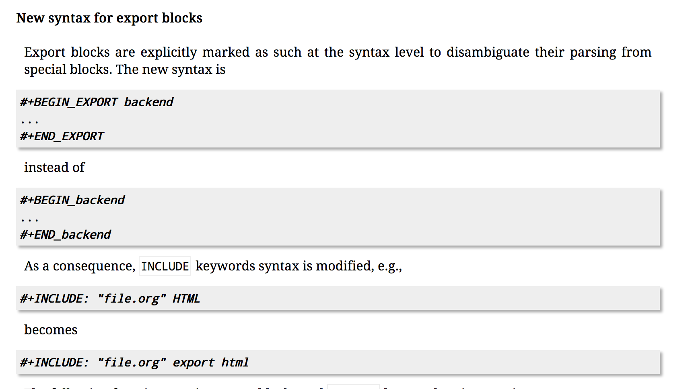

org-mode 9.x has some breaking changes on export blocks, if you still want to use org-mode 8's syntax, here's the little guide on how to let coldnew/hexo-renderer-org renderer the org-mode 8 syntax properly.
Before we started, let's look again what's different between org-mode 8 and org-mode 9:

Oh, no. The export block syntax is different, let's add some snippet to let coldnew/hexo-renderer-org can fix the render result:
First, add following to your _config.yml
org: # skip ... user_config: './emacs/init.el'
Then add following code to your ./emacs/init.el.
(defun org-mode-compability-fixup () ;; http://orgmode.org/Changes.html#orgf3f9c91 ;; Repair export blocks and INCLUDE keywords in current buffer. (let ((case-fold-search t) (back-end-re (regexp-opt '("HTML" "ASCII" "LATEX" "ODT" "MARKDOWN" "MD" "ORG" "MAN" "BEAMER" "TEXINFO" "GROFF" "KOMA-LETTER") t))) (org-with-wide-buffer (goto-char (point-min)) (let ((block-re (concat "^[ \t]*#\\+BEGIN_" back-end-re))) (save-excursion (while (re-search-forward block-re nil t) (let ((element (save-match-data (org-element-at-point)))) (when (eq (org-element-type element) 'special-block) (save-excursion (goto-char (org-element-property :end element)) (save-match-data (search-backward "_")) (forward-char) (insert "EXPORT") (delete-region (point) (line-end-position))) (replace-match "EXPORT \\1" nil nil nil 1)))))) (let ((include-re (format "^[ \t]*#\\+INCLUDE: .*?%s[ \t]*$" back-end-re))) (while (re-search-forward include-re nil t) (let ((element (save-match-data (org-element-at-point)))) (when (and (eq (org-element-type element) 'keyword) (string= (org-element-property :key element) "INCLUDE")) (replace-match "EXPORT \\1" nil nil nil 1))))))))
We also need to overwrite the hexo-renderer-org-exporter like this:
(add to your ./emacs/init.el too)
(defun hexo-renderer-org-exporter () "The exporter function. When execute this function, we must in the `org-mode' file. This function is intend to let user overwrite in their user-config." ;; Convert org-mode 8.x -> org-mode 9.x (org-mode-compability-fixup) ;; Export the result (org-hexo-export-as-html))
Ok, restart your hexo and you'll find coldnew/hexo-renderer-org can renderer org-mode 8 syntax now :)